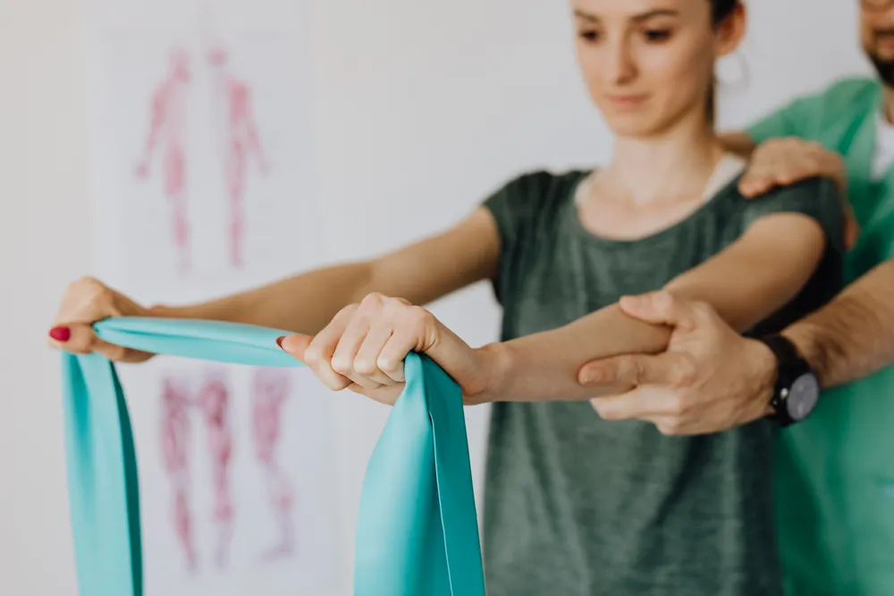

Bone-health DXA after a low-trauma fracture
A fracture after a minor fall or similar low-energy event can be a reason to discuss broader fracture risk. DXA may be one part of that assessment, but it does not image or manage the acute fracture.
Urgent and acute care: A new injury, severe pain, visible deformity or inability to use a limb needs prompt clinical or emergency assessment. This pathway is not an emergency service, an acute X-ray request or a fracture-healing check.

After acute care, ask the wider bone-health question
Fracture treatment and longer-term bone-health assessment are different routes.
- Complete acute care
Use the appropriate urgent, emergency or orthopaedic route for the injury and its healing.
- Request bone-health review
Select this pathway so the practice can confirm whether DXA, a written request and an appointment are appropriate.
- Measure in context
Attend only after confirmation; a clinician considers the result with the fracture history and other risk factors.
Post-fracture bone-health DXA: practical answers
This pathway starts after the immediate injury route and does not replace fracture treatment or follow-up.
- What is this pathway?
- A route for asking whether DXA bone-density measurement should form part of a broader bone-health assessment after a low-trauma fracture, such as one following a fall from standing height or less.
- Who may find it useful?
- Adults whose acute fracture has been assessed and who have been advised, or want the practice to confirm, whether the event should prompt a bone-health review.
- What does it not do?
- DXA does not show whether a new fracture is present, check alignment or healing, explain every cause of a fracture, or replace emergency, orthopaedic or rehabilitation care.
- How much does it cost?
- Practice confirmation required. No public cash or self-pay price has been approved for this pathway.
- Do I need a referral or written request?
- Practice confirmation required. Ask before booking or travelling; the practice must confirm whether a written clinical request is needed and whether the post-fracture indication is supported.
- Is medical aid accepted or is it self-pay?
- Practice confirmation required. Medical-aid claims, authorisation and self-pay arrangements have not been approved for publication.
- Appointment or walk-in?
- This is a request-based bone-health route, not an emergency or walk-in injury service. A preferred date or time is not an appointment until InsureSPR confirms it.
- What should I bring or disclose?
- The practice must confirm documents and preparation. Ask how to share earlier reports or fracture details safely instead of placing them in public notes. Tell the clinical team privately before attendance if you are or may be pregnant.
- How long does it take?
- Practice confirmation required. No scan or total-visit duration has been approved for publication.
- How and when are results provided?
- Practice confirmation required. The report format, professional interpretation, recipient and turnaround time have not been approved for publication.
- Where is it and what should I do next?
- InsureSPR is at 7 Malibongwe Drive, EmedCentre, Randburg. Once urgent fracture care is complete, submit this pathway request and wait for every practical detail to be confirmed before travelling.